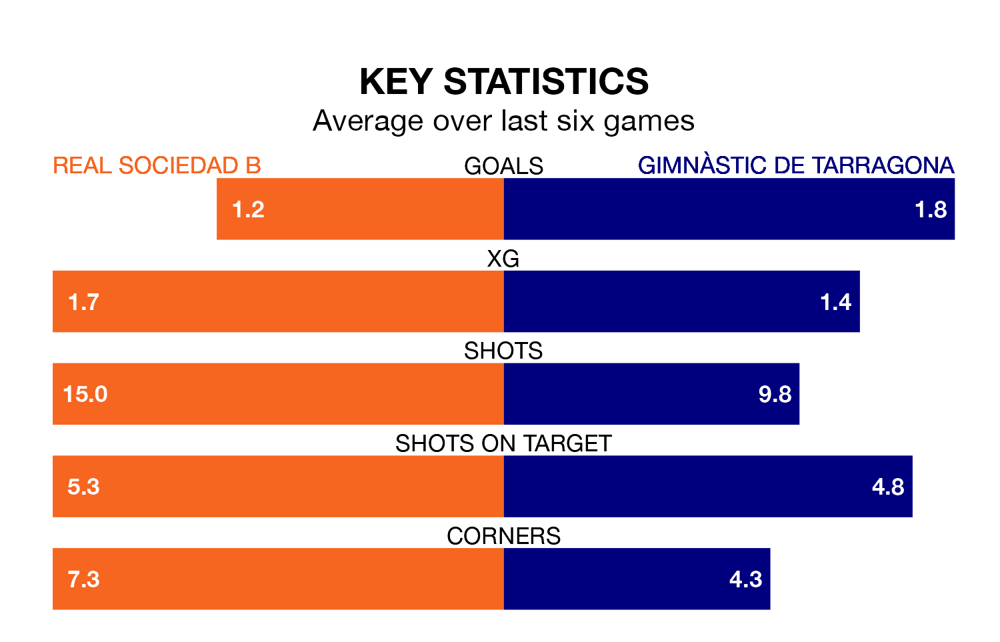

Real Sociedad B and Gimnàstic de Tarragona come into Sunday's kick-off at the Estadio Zubieta XXI in contrasting spells, with the away team hitting a rich vein of form while the hosts struggle.
Sociedad B have drawn three and lost three of the last six, while Gimnàstic de Tarragona have taken five wins and one draw.
In Jon Magunacelaya Argoitia, Sociedad B have the league's sharpest shooter so far this season. He has notched one goal in one appearance.
Gimnàstic de Tarragona's top scorer, with one goal in one game, is Ignacio González Ruiz.
The visitors are second in the table after 21 games, of which they have won 11 and drawn six, earning 39 points.
The home team are five places behind Gimnàstic de Tarragona in seventh, with seven wins and 10 draws putting them on 31 points.
With 25 goals in 21 games so far this season, Sociedad B are scoring more than average in the league with 1.2 goals per game. And they are conceding at an average rate, letting in 20 goals at a rate of 1.0 per game.
Gimnàstic de Tarragona are also above average scorers, with 1.2 goals per game, compared to a league average of 1.0. They have conceded 0.6 goals per game.
In the last three years, Sociedad B and Gimnàstic de Tarragona have played each other on three occasions. They won one each, and they drew once.
Their last meeting was on October 22, when they played out a 2-2 draw.
Sociedad B's last match was on January 27, a 1-0 loss against CD Lugo.
Gimnàstic de Tarragona drew 1-1 with Osasuna B last time out, on Sunday, with Andy Escudero Núñez on the scoresheet.
Updated: 10:03 (UTC), 30/01/24